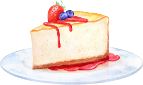

Cheesecake de Frutas
Essa receita de cheesecake de frutas vermelhas é
simplesmente deliciosa! A combinação do doce
do morango com o sabor levemente ácido do
mirtilo cria uma sobremesa fresca e equilibrada.
Além disso, a textura cremosa do cheesecake
contrasta perfeitamente com a crocância da
base de biscoitos. Se você está procurando uma
sobremesa fácil de fazer e que impressione seus
convidados, essa é a receita ideal.
Modo de preparo
Ingredientes:
- 200g de biscoito de maisena
- 100g de manteiga
- 300g de cream cheese
- 1 lata de leite condensado
- 1 colher de sopa de gelatina em pó incolor
- 1 xícara de morangos picados
- 1 xícara de mirtilos
Modo de Preparo:
-
Triture os biscoitos e misture com a manteiga
derretida. Forre uma forma e leve à geladeira. -
Bata o cream cheese, leite condensado e suco
de limão. Adicione a gelatina dissolvida. -
Despeje sobre a base de biscoitos e leve à
geladeira por 2 horas. - Cubra com as frutas e sirva gelado.